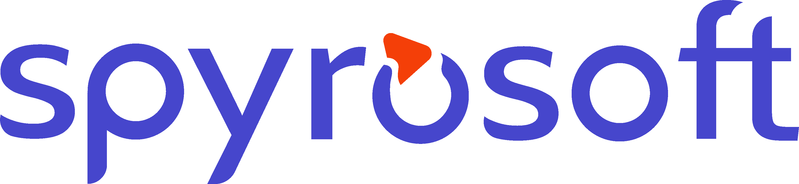
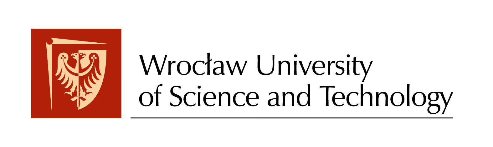
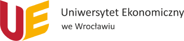

01 · Otwarcie

Kolektyw robotyki i AI · Wrocław
Machinekind
Uczymy maszyny poruszać się w świecie ludzi.
machinekind.ai
02 · Zaproszenie
Machinekind
Pierwsze wydarzenie
Łączymy robotykę i AI,
budując humanoida!
Zapraszamy na pierwsze wydarzenie projektu i społeczności Machinekind.
machinekind.ai
03 · Znak — plansza postojowa
Machinekind
machinekind.ai
04 · Program wydarzenia
 Machinekind
Machinekind
Program wydarzenia
-
01
Spyrosoft
Partner wydarzenia
Kilka słów od partnera
-
02
Michał Pogoda-Rosikoń
bards.ai
Dlaczego teraz jest najlepszy czas na budowanie humanoidów. Założenia projektu i społeczności Machinekind
-
03
Grzegorz Piotrowski
Politechnika Wrocławska
Podaj mi piwo — podstawy autonomicznych robotów
-
04
Marcin Wysocki
Positive Surfer
Jak AI obniża barierę wejścia, pozostawiając pole dla nauki
-
05
Łukasz Janiec
Politechnika Wrocławska
Od jednego do wielu robotów — różne podejścia i różnice w autonomii
machinekind.ai
05 · Za chwilę — szablon zapowiedzi
Machinekind
Za chwilę
Tytuł wystąpienia.
Imię Nazwisko · organizacja
Program dnia
machinekind.ai
06 · Rozdział — szablon przerywnika
00
Machinekind
Nadtytuł rozdziału
Tytuł rozdziału.
Jedno zdanie o tym, co się za chwilę wydarzy.
Oznaczenie · pomiar
machinekind.ai
07 · Wystąpienie 01 — Spyrosoft
Machinekind
Za chwilę
Kilka słów
od partnera.
Spyrosoft
Partner wydarzenia
machinekind.ai
08 · Wystąpienie 02 — Michał Pogoda-Rosikoń
Machinekind
Za chwilę
Dlaczego teraz jest
najlepszy czas na
budowanie
humanoidów.
Michał Pogoda-Rosikoń · bards.ai
Założenia projektu i społeczności
machinekind.ai
09 · Wystąpienie 03 — Grzegorz Piotrowski
Machinekind
Za chwilę
Podaj mi piwo.
Grzegorz Piotrowski · Politechnika Wrocławska
Podstawy autonomicznych robotów
machinekind.ai
10 · Wystąpienie 04 — Marcin Wysocki
Machinekind
Za chwilę
Jak AI obniża barierę wejścia,
pozostawiając pole dla
nauki.
Marcin Wysocki · Positive Surfer
machinekind.ai
11 · Wystąpienie 05 — Łukasz Janiec
Machinekind
Za chwilę
Od jednego
do wielu robotów.
Łukasz Janiec · Politechnika Wrocławska
Różne podejścia i różnice w autonomii
machinekind.ai
12 · Punkt styku

Machinekind
Punkt styku.
machinekind.ai
13 · Domena 01 — Locomotion AI
01
Machinekind
Locomotion AI
Chód uczony
w symulacji.
Sieci sterujące chodem trenujemy w symulatorze pełnej dynamiki. Te same trajektorie przenosimy na maszynę.
300 mln kroków · sim-to-real
machinekind.ai
14 · Domena 02 — World Models & VLM
02
Machinekind
World Models & VLM
Rozumienie
przestrzeni.
Modele świata i modele wizyjno-językowe dają maszynie kontekst: co widzi, gdzie może stanąć i co z tego wynika dla następnego kroku.
VLM · zamiar
machinekind.ai
15 · Domena 03 — Robotics Engineering & Manufacturing
03
Machinekind
Robotics Engineering & Manufacturing
Konstrukcja
i napędy.
Napędy bezpośrednie, nogi o zamkniętym łańcuchu kinematycznym, sztywność wzięta ze struktury zamiast z dodatkowej masy.
Direct drive · closed-loop
machinekind.ai
16 · Domena 04 — Design & Program
04
Machinekind
Design & Program
Prowadzenie
i forma.
Harmonogram, prowadzenie projektu i to, jak maszyna wygląda. Forma wynika z obciążenia: każde wycięcie odprowadza ciepło.
Program · design
machinekind.ai
17 · Wojtek
 Machinekind
Machinekind
Pierwsza maszyna
Wojtek
Pies-robot z Politechniki Wrocławskiej. Poznacie go na miejscu.
W01-TEK · CFRP-IP67
machinekind.ai
18 · Teza
Machinekind
Budujemy,
nie doradzamy.
Każda domena kończy się czymś, co się uruchamia. Nie oddajemy prezentacji.
machinekind.ai
19 · Partner wydarzenia
Machinekind
Partner wydarzenia

spyro-soft.com
machinekind.ai
20 · Organizatorzy
Machinekind
Organizatorzy.
-
Laboratorium Mechatroniki i Robotyki
Katedra Podstaw Konstrukcji Maszyn i Układów Mechatronicznych, Wydział Mechaniczny Politechniki Wrocławskiej
-
Katedra Sztucznej Inteligencji
Politechnika Wrocławska
-
AI HUB @ UEW
Uniwersytet Ekonomiczny we Wrocławiu
-
Bards.ai
-
Centrum Zastosowań Sztucznej Inteligencji


machinekind.ai
21 · Przerwa
Machinekind
Przerwa
15 minut
machinekind.ai
22 · Pytania
Machinekind
Pytania
machinekind.ai
23 · Dziękujemy — kontakt
Machinekind
Dziękujemy
Kontakt
hello@wo1.tech
Strona
machinekind.ai
machinekindai
Gdzie
Wrocław
machinekind.ai